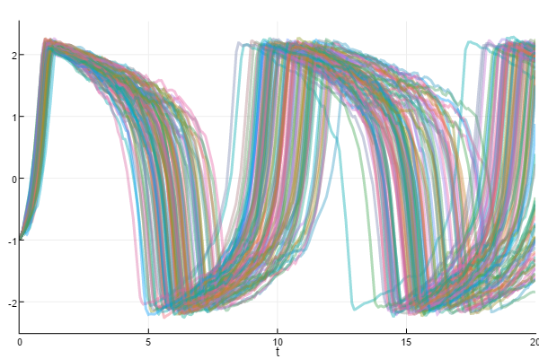
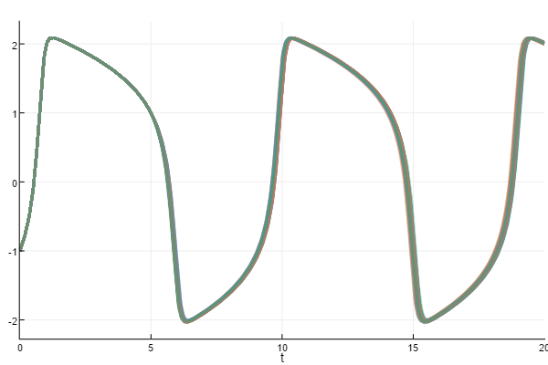
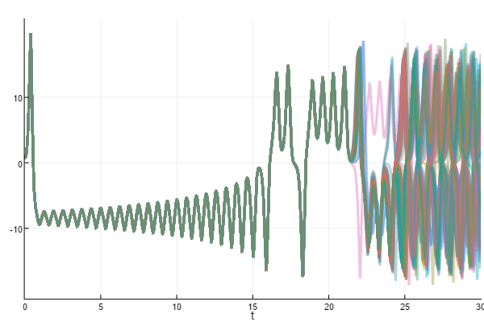
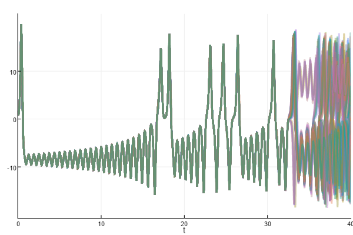

Uncertainty Quantification
Uncertainty quantification allows a user to identify the uncertainty associated with the numerical approximation given by DifferentialEquations.jl. This page describes the different methods available for quantifying such uncertainties. Note that this requires one of the native Julia solvers like OrdinaryDiffEq.jl, StochasticDiffEq.jl, or DelayDiffEq.jl.
Installation
This functionality does not come standard with DifferentialEquations.jl. To use this functionality, you must install DiffEqUncertainty.jl:
]add DiffEqUncertainty
using DiffEqUncertaintyProbInts
The ProbInts method for uncertainty quantification involves the transformation of an ODE into an associated SDE where the noise is related to the timesteps and the order of the algorithm. This is implemented into the DiffEq system via a callback function. The first form is:
ProbIntsUncertainty(σ,order,save=true)σ is the noise scaling factor and order is the order of the algorithm. save is for choosing whether this callback should control the saving behavior. Generally this is true unless one is stacking callbacks in a CallbackSet. It is recommended that σ is representative of the size of the errors in a single step of the equation.
If you are using an adaptive algorithm, the callback
AdaptiveProbIntsUncertainty(order,save=true)determines the noise scaling automatically using an internal error estimate.
Example 1: FitzHugh-Nagumo
In this example we will determine our uncertainty when solving the FitzHugh-Nagumo model with the Euler() method. We define the FitzHugh-Nagumo model:
function fitz(du,u,p,t)
V,R = u
a,b,c = p
du[1] = c*(V - V^3/3 + R)
du[2] = -(1/c)*(V - a - b*R)
end
u0 = [-1.0;1.0]
tspan = (0.0,20.0)
p = (0.2,0.2,3.0)
prob = ODEProblem(fitz,u0,tspan,p)Now we define the ProbInts callback. In this case, our method is the Euler method and thus it is order 1. For the noise scaling, we will try a few different values and see how it changes. For σ=0.2, we define the callback as:
cb = ProbIntsUncertainty(0.2,1)This is akin to having an error of approximately 0.2 at each step. We now build and solve a EnsembleProblem for 100 trajectories:
ensemble_prob = EnsembleProblem(prob)
sim = solve(ensemble_prob,Euler(),trajectories=100,callback=cb,dt=1/10)Now we can plot the resulting Monte Carlo solution:
using Plots; plotly(); plot(sim,vars=(0,1),linealpha=0.4)
If we increase the amount of error, we see that some parts of the equation have less uncertainty than others. For example, at σ=0.5:
cb = ProbIntsUncertainty(0.5,1)
ensemble_prob = EnsembleProblem(prob)
sim = solve(ensemble_prob,Euler(),trajectories=100,callback=cb,dt=1/10)
using Plots; plotly(); plot(sim,vars=(0,1),linealpha=0.4)
But at this amount of noise, we can see how we contract to the true solution by decreasing dt:
cb = ProbIntsUncertainty(0.5,1)
ensemble_prob = EnsembleProblem(prob)
sim = solve(ensemble_prob,Euler(),trajectories=100,callback=cb,dt=1/100)
using Plots; plotly(); plot(sim,vars=(0,1),linealpha=0.4)
Example 2: Adaptive ProbInts on FitzHugh-Nagumo
While the first example is academic and shows how the ProbInts method scales, the fact that one should have some idea of the error in order to calibrate σ can lead to complications. Thus the more useful method in many cases is the AdaptiveProbIntsUncertainty version. In this version, no σ is required since this is calculated using an internal error estimate. Thus this gives an accurate representation of the possible error without user input.
Let's try this with the order 5 Tsit5() method on the same problem as before:
cb = AdaptiveProbIntsUncertainty(5)
sol = solve(prob,Tsit5())
ensemble_prob = EnsembleProblem(prob)
sim = solve(ensemble_prob,Tsit5(),trajectories=100,callback=cb)
using Plots; plotly(); plot(sim,vars=(0,1),linealpha=0.4)
In this case, we see that the default tolerances give us a very good solution. However, if we increase the tolerance a lot:
cb = AdaptiveProbIntsUncertainty(5)
sol = solve(prob,Tsit5())
ensemble_prob = EnsembleProblem(prob)
sim = solve(ensemble_prob,Tsit5(),trajectories=100,callback=cb,abstol=1e-3,reltol=1e-1)
using Plots; plotly(); plot(sim,vars=(0,1),linealpha=0.4)
we can see that the moments just after the rise can be uncertain.
Example 3: Adaptive ProbInts on the Lorenz Attractor
One very good use of uncertainty quantification is on chaotic models. Chaotic equations diverge from the true solution according to the error exponentially. This means that as time goes on, you get further and further from the solution. The ProbInts method can help diagnose how much of the timeseries is reliable.
As in the previous example, we first define the model:
function g(du,u,p,t)
du[1] = p[1]*(u[2]-u[1])
du[2] = u[1]*(p[2]-u[3]) - u[2]
du[3] = u[1]*u[2] - p[3]*u[3]
end
u0 = [1.0;0.0;0.0]
tspan = (0.0,30.0)
p = [10.0,28.0,8/3]
prob = ODEProblem(g,u0,tspan,p)and then we build the ProbInts type. Let's use the order 5 Tsit5 again.
cb = AdaptiveProbIntsUncertainty(5)Then we solve the MonteCarloProblem
ensemble_prob = EnsembleProblem(prob)
sim = solve(ensemble_prob,Tsit5(),trajectories=100,callback=cb)
using Plots; plotly(); plot(sim,vars=(0,1),linealpha=0.4)
Here we see that by t about 22 we start to receive strong deviations from the "true" solution. We can increase the amount of time before error explosion by using a higher order method with stricter tolerances:
tspan = (0.0,40.0)
prob = ODEProblem(g,u0,tspan,p)
cb = AdaptiveProbIntsUncertainty(7)
ensemble_prob = EnsembleProblem(prob)
sim = solve(ensemble_prob,Vern7(),trajectories=100,callback=cb,reltol=1e-6)
using Plots; plotly(); plot(sim,vars=(0,1),linealpha=0.4)
we see that we can extend the amount of time until we deviate strongly from the "true" solution. Of course, for a chaotic system like the Lorenz one presented here, it is impossible to follow the true solution for long times, due to the fact that the system is chaotic and unavoidable deviations due to the numerical precision of a cumputer get amplified exponentially.
However, not all hope is lost. The shadowing theorem is a strong statement for having confidence in numerical evolution of chaotic systems:
Although a numerically computed chaotic trajectory diverges exponentially from the true trajectory with the same initial coordinates, there exists an errorless trajectory with a slightly different initial condition that stays near ("shadows") the numerically computed one.
For more info on the shadowing theorem, please see the book Chaos in Dynamical Systems by E. Ott.